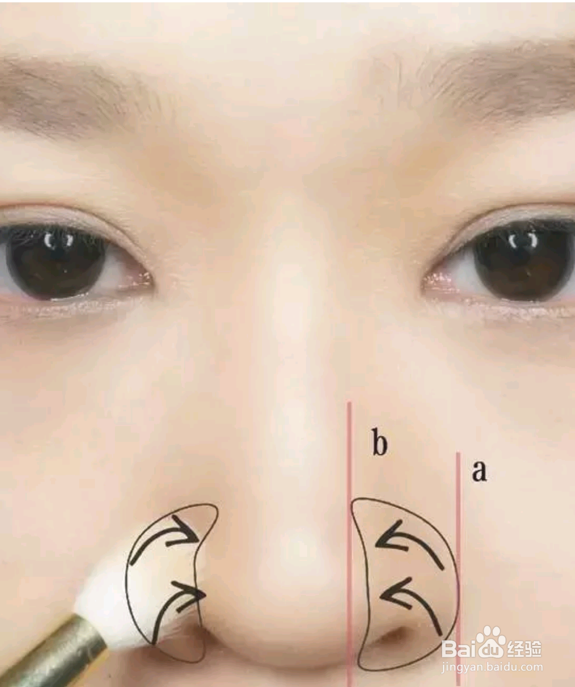

工具/原料 |
|
山根较低鼻头较大的鼻影画法 |
|
1.首先这次主要注重的是山根和鼻头，所以鼻影我也主要强调这两个地方。准守化妆中第一笔下笔，应该是整体中比较重的部分的原则，用鼻影刷首先强调这两个地方，也是整个鼻影结构里比较深的地方。 |
|
2.随后将晕染刷上多余的阴影粉在纸巾上擦干净也不要再去沾取新的阴影粉，在刚刚上图的基础上将两个最重的区域晕染开，分别向眉头处、鼻梁和鼻头以及最后向鼻翼带过一下的晕染，将色块都晕染开为止。 |
|
3.阴影最怕的就是高光区域和阴影区域有明显的界线，那样鼻子看的就很奇怪，外人一看就是鼻影大得很不高超。所以我都会利用哑光高光粉将之前阴影边界处柔化一下，将高光和阴影完美的融合起来。 |
|
缩小鼻翼垫高鼻头的画法 |
|
|  | 1.用阴影刷沾取阴影粉后在手心或者虎口揉一揉，确保阴影粉均匀的附着在刷毛上后，从鼻翼的根部a点起笔单向的刷向鼻翼与鼻头的沟壑b点。 |
2.随后不要停笔，直接贯穿的从鼻翼与鼻头间的沟壑b点扫向鼻梁再连到眉头，这期间的笔触全部都是单向的形式，如果觉得效果还不够，可以重复全部过程一遍，少量多次直到自己满意。 |
|
3.高光刷沾取高光粉从鼻头处单向刷去印堂的位置，将阴影粉的结块柔和一下。 |
|